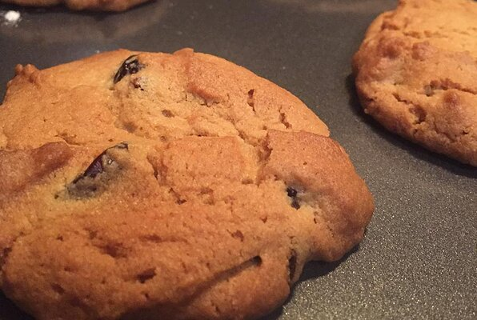

Peanut Butter Cookies

Description
It takes a total of 2 hours which include 15 minutes preparation and 15 minutes of cooking. The recipe serves 72 cookies with Nutrition per Serving: 85 calories; protein 1.5g; carbohydrates 9.7g; fat 4.8g; cholesterol 11.9mg; sodium 83.4mg.
Ingredients :
- 1 cup butter, softened
- 1 cup white sugar
- 1 cup packed brown sugar
- 2 eggs
- 1 cup peanut butter
- 2 cups all-purpose flour
- 2 teaspoons baking soda
- ¼ teaspoon salt
- 1 cup flaked coconut
Steps :
- Preheat oven to 375 degrees F (190 degrees C).
- n a medium bowl, cream together the butter, white sugar, and brown sugar until light and fluffy. Beat in the eggs one at a time, then mix in the peanut butter. Combine the flour, baking soda, and salt; blend in to form a soft dough. Mix in coconut. Drop dough by teaspoonfuls onto ungreased cookie sheets. Flatten each cookie using the tines of a fork.
- Bake for 12 to 15 minutes in the preheated oven. Cool on wire racks.